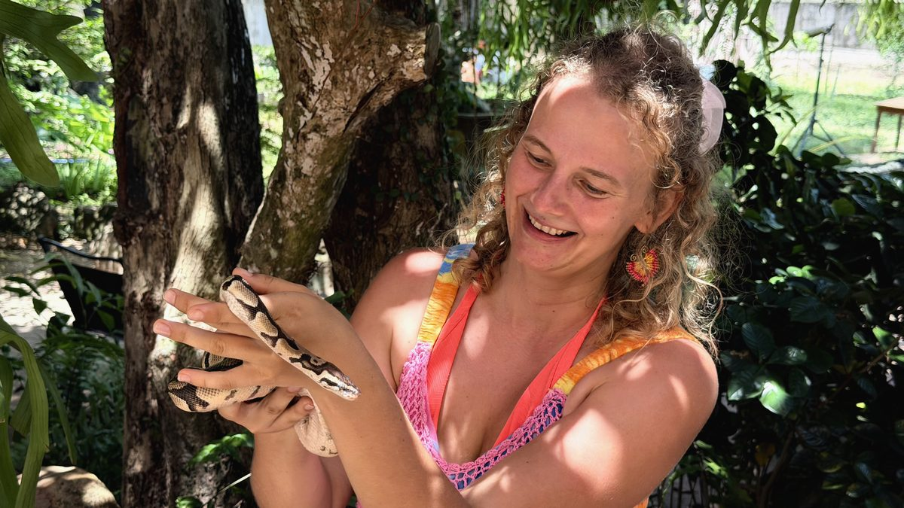

She didn't flinch
Ta ei värisenud
There are creatures the world tells us to fear. And then there are moments when you hold one in your hands and realise — the fear was never about the creature. It was about what you thought you couldn't hold.
On olendeid, keda maailm käsib karta. Ja siis on hetki, kui hoiad ühte käes ja mõistad — hirm ei olnud kunagi selle olendi pärast. See oli selle pärast, mida sa arvasid, et ei suuda hoida.